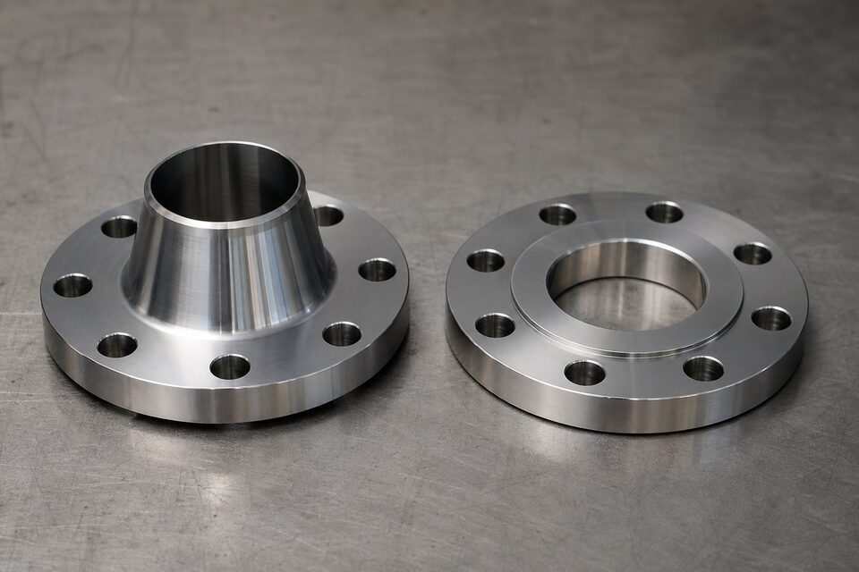

تفاوت ساختاری
فلنج گلودار دارای گلوی مخروطی است که به صورت جوشی لببهلب به لوله متصل میشود؛ این گلو مانند یک گذار تدریجی، تنش را از فلنج به لوله منتقل میکند. فلنج اسلیپآن روی لوله سوار شده و با دو جوش گوشهای (داخلی و خارجی) ثابت میشود؛ ساختاری سادهتر اما با تمرکز تنش بیشتر.

جدول مقایسه
| معیار | گلودار | اسلیپآن |
|---|---|---|
| انتقال تنش | تدریجی و یکنواخت | متمرکز در جوش گوشهای |
| عمر خستگی | بالا | متوسط |
| سیکل حرارتی | عملکرد عالی | محدودتر |
| قیمت | بالاتر | اقتصادیتر |
| نصب | دقت در تطابق گلو | آسانتر |
| کاربرد رایج | سرویسهای حساس و پرفشار | خطوط عمومی کمحساسیت |
رفتار در سیکل و خستگی
در خطوطی که بارها گرم و سرد میشوند، تمرکز تنش در محل اتصال تعیینکننده عمر است. گلوی مخروطی با پخش تنش، مقاومت خستگی را بالا میبرد؛ به همین دلیل در نزدیکی تجهیزات دما بالا و خطوط با سیکل کاری سنگین، انتخاب استاندارد محسوب میشود.
اقتصاد انتخاب
- در خطوط عمومی با فشار و دمای معمولی، اسلیپآن توجیه اقتصادی دارد.
- در سرویس حساس، هزینه اولیه گلودار در برابر ریسک توقف خط ناچیز است.
- ترکیب هوشمندانه: گلودار در نقاط حساس و اسلیپآن در نقاط عمومی.
- الزامات مشخصه پروژه بر هر ملاحظه اقتصادی مقدم است.
راهنمای انتخاب
- سرویس پرفشار، دمای بالا یا سیکل حرارتی: گلودار.
- نقاط اتصال تجهیزات حساس: گلودار.
- خطوط عمومی کمحساسیت با فشار متوسط: اسلیپآن.
- در همه حالات، کلاس و متریال را با خط هماهنگ کنید.
نکات نصب
- در گلودار، تطابق ضخامت گلو با دیواره لوله کنترل شود.
- در اسلیپآن، هر دو جوش گوشهای کامل و بدون عیب باشد.
- سطح آببندی در هر دو نوع پیش از نصب محافظت شود.
- گشتاور پیچها به صورت متقارن و کنترلشده اعمال شود.
الزامات مشخصه پروژه
بسیاری از مشخصههای شرکتهای بزرگ، استفاده از گلودار را در سرویسهای خاصی الزامی کردهاند؛ مانند خطوط با سیکل حرارتی، نقاط نزدیک تجهیزات دما بالا و کلاسهای فشاری بالاتر از حد مشخص. پیش از سفارش، الزامات مشخصه پروژه را بررسی کنید تا انتخاب با مدارک حاکم هماهنگ باشد.
اجرا و بازرسی جوش در دو نوع فلنج
یکی از تفاوتهای عملی مهم این دو فلنج، رفتار آنها در اجرا و بازرسی جوش است که مستقیما بر هزینه و برنامه ساخت اثر میگذارد. در فلنج گلودار، اتصال با یک جوش نفوذی کامل بین گلو و لوله انجام میشود؛ این جوش کیفیت بالایی دارد اما اجرای آن زمانبرتر است و معمولا به پخزنی مناسب، چند پاس جوشکاری و در نقاط حساس، آزمون غیرمخرب کامل نیاز دارد. کنترل کیفیت این جوش با رادیوگرافی یا التراسونیک به خوبی ممکن است و این قابلیت بازرسی، یکی از دلایل اصلی انتخاب گلودار در سرویسهای حساس است. در فلنج اسلیپآن، اتصال شامل دو جوش است: یک جوش محیطی داخل و یک جوش محیطی خارج. این دو جوش معمولا سریعتر اجرا میشوند و نیاز به پخزنی خاص ندارند؛ اما بازرسی جوش داخل در عمل محدودتر است و در سرویسهای حساس، این محدودیت باید در انتخاب لحاظ شود. نکته مهم در نصب اسلیپآن، فاصله بین انتهای لوله و صورت فلنج است؛ اگر لوله تا سطح داخلی فلنج پیش برود، در زمان جوشکاری و بهرهبرداری، تمرکز تنش و آسیب صورت فلنج رخ میدهد. تنظیم این فاصله کوچک، یک گام اجرایی ساده اما حیاتی است. در بازرسی تحویل هر دو نوع، کنترل زاویه و ابعاد گلو در گلودار و کنترل عمق مناسب محل قرارگیری لوله در اسلیپآن اهمیت دارد. یک تفاوت دیگر، اعوجاج ناشی از جوشکاری است؛ در فلنجهای اسلیپآن با دو جوش، کنترل توالی جوشکاری برای جلوگیری از تاب برداشتن فلنج اهمیت بیشتری دارد و در مونتاژهای حساس، اندازهگیری تختی صورت فلنج پس از جوشکاری توصیه میشود. از منظر اقتصادی، زمان جوشکاری کمتر اسلیپآن در تعداد بالا صرفهجویی قابل توجهی ایجاد میکند، اما در سرویسهایی که بازرسی کامل جوش الزامی است، این صرفهجویی تا حد زیادی با هزینه کنترلهای تکمیلی خنثی میشود؛ بنابراین انتخاب باید بر اساس مجموع هزینه ساخت و بازرسی در همان پروژه انجام شود، نه بر اساس قاعده کلی.
جمعبندی
گلوی مخروطی، بیمه عمر اتصال در سرویسهای سخت است. انتخاب را بر اساس حساسیت سرویس انجام دهید، نه فقط قیمت خرید.
سوالات رایج
مزیت اصلی فلنج گلودار چیست؟
گلوی مخروطی، تنش را به تدریج به لوله منتقل میکند و تمرکز تنش را کاهش میدهد. به همین دلیل در سرویسهای پرفشار، دمای بالا و سیکلهای حرارتی، عمر خستگی بهتری دارد.
چرا اسلیپآن ارزانتر است؟
ساخت سادهتر و ماشینکاری کمتر، قیمت آن را پایین میآورد. اما اتصال آن با دو جوش گوشهای است و مقاومت خستگی کمتری نسبت به نوع گلودار دارد.
در چه سرویسهایی حتماً گلودار انتخاب میشود؟
خطوط پرفشار و دمای بالا، سرویسهای با سیکل حرارتی مکرر، نقاط اتصال تجهیزات حساس و هر جا که ریسک خستگی مطرح است. بسیاری از مشخصههای پروژه، گلودار را در این سرویسها الزامی میکنند.
آیا اسلیپآن در کلاسهای بالا هم استفاده میشود؟
در کلاسهای خیلی بالا و سرویسهای حساس معمولاً توصیه نمیشود. مرجع نهایی، مشخصه پروژه و جداول فشار-دمای استاندارد است.
مطالب مرتبط
- استاندارد فلنجهای جوشی (ASME B16.5)
- راهنمای جنس و متریال فلنج صنعتی
- راهنمای انواع گسکت صنعتی
- فولاد فورج کربنی (ASTM A105)
- راهنمای اتصالات فیتینگ پایپینگ
با ذکر کلاس فشاری، سایز و شرایط سرویس، نوع مناسب فلنج به همراه گواهی مواد کامل پیشنهاد میشود.
مشاهده صفحه محصول ← ثبت RFQ همین محصولتامین این تجهیزات را به پیشرو تجهیز فرتاک بسپارید
شرکت پیشرو تجهیز فرتاک تامینکننده تخصصی تجهیزات صنعتی برای پروژههای نفت، گاز، پتروشیمی، فولاد و نیروگاهی است. برای دریافت پیشنهاد فنی و قیمت، استعلام (RFQ) خود را ثبت کنید تا کارشناسان مهندسی فروش در کوتاهترین زمان پاسخ دهند.
- تامین فلنجهر دو نوع با گواهی مواد و متریالهای مختلف
- تامین تجهیزات پایپینگگسکت و پیچ و مهره هماهنگ